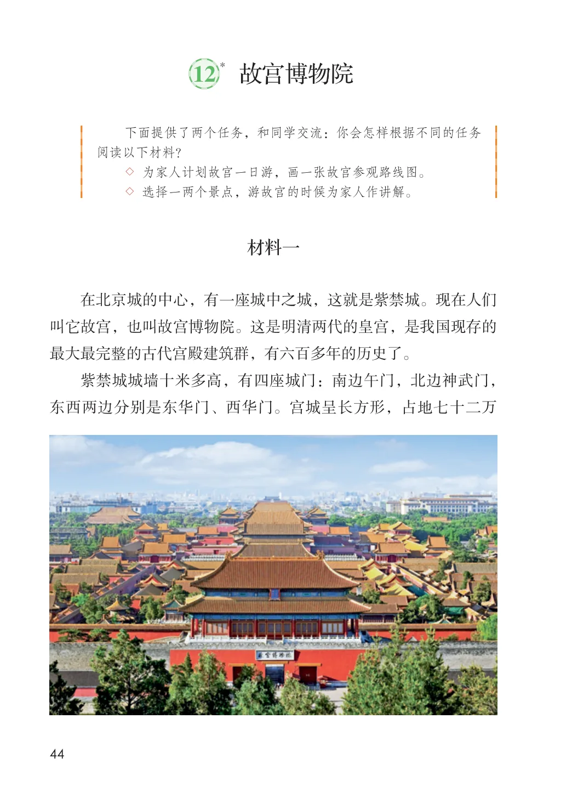
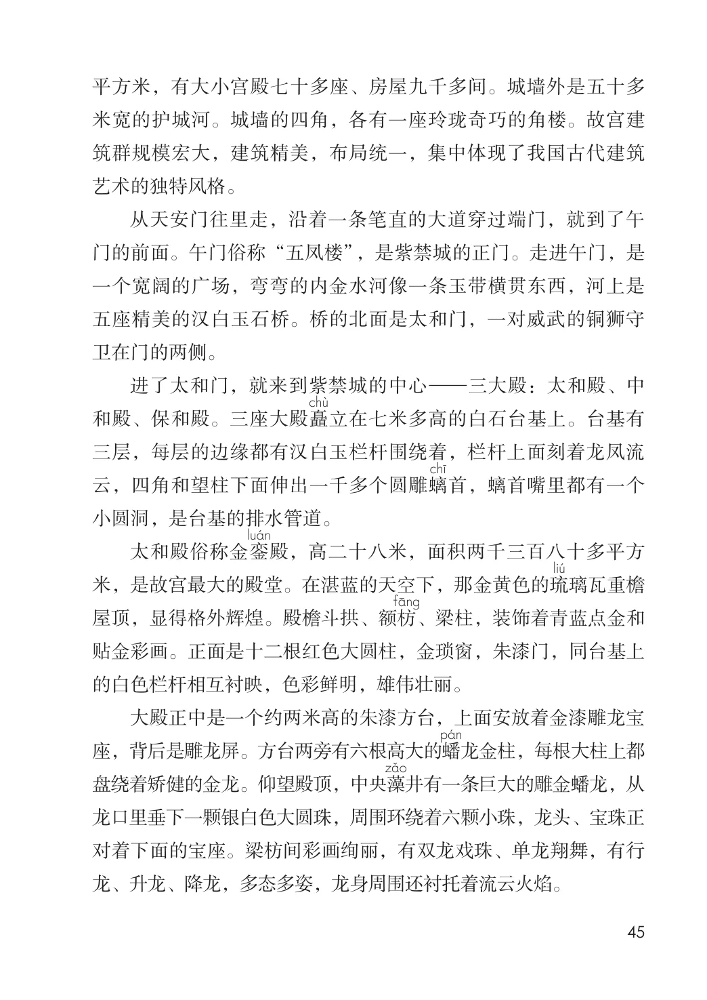
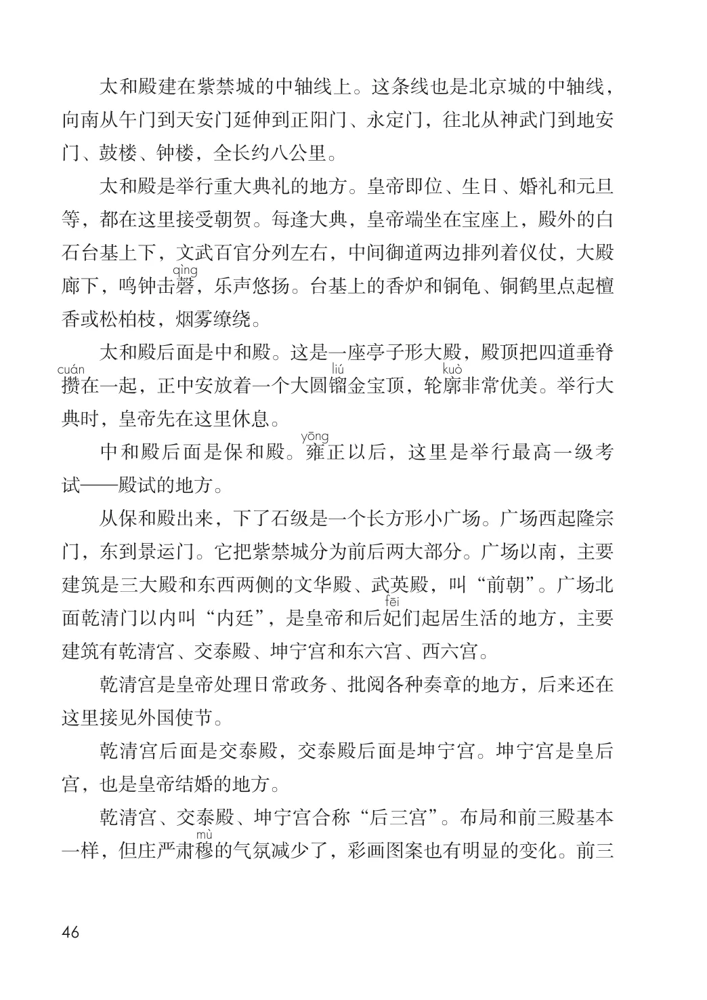
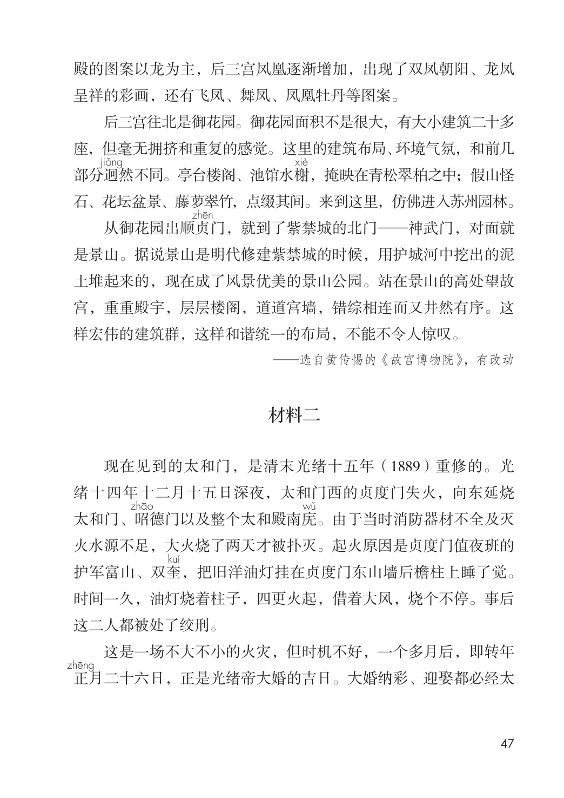
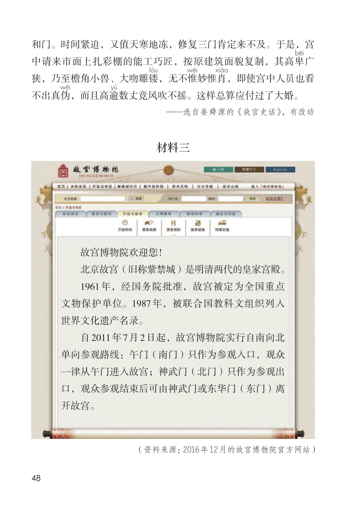
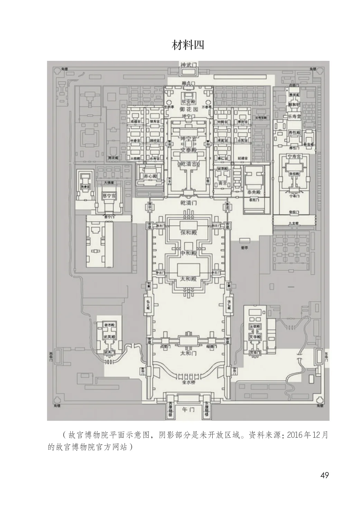

第三单元 · 第 12 课
故宫博物院
课后练习
- 下面提供了两个任务，和同学交流：你会怎样根据不同的任务阅读以下材料？
- ◇ 为家人计划故宫一日游，画一张故宫参观路线图。
- ◇ 选择一两个景点，游故宫的时候为家人作讲解。材料一在北京城的中心，有一座城中之城，这就是紫禁城。现在人们叫它故宫，也叫故宫博物院。这是明清两代的皇宫，是我国现存的最大最完整的古代宫殿建筑群，有六百多年的历史了。紫禁城城墙十米多高，有四座城门：南边午门，北边神武门，东西两边分别是东华门、西华门。宫城呈长方形，占地七十二万
文字内容 PDF 第 50 页
平方米，有大小宫殿七十多座、房屋九千多间。城墙外是五十多米宽的护城河。城墙的四角，各有一座玲珑奇巧的角楼。故宫建筑群规模宏大，建筑精美，布局统一，集中体现了我国古代建筑艺术的独特风格。
从天安门往里走，沿着一条笔直的大道穿过端门，就到了午门的前面。午门俗称“五凤楼”，是紫禁城的正门。走进午门，是一个宽阔的广场，弯弯的内金水河像一条玉带横贯东西，河上是五座精美的汉白玉石桥。桥的北面是太和门，一对威武的铜狮守卫在门的两侧。
进了太和门，就来到紫禁城的中心—三大殿：太和殿、中和殿、保和殿。三座大殿矗立在七米多高的白石台基上。台基有三层，每层的边缘都有汉白玉栏杆围绕着，栏杆上面刻着龙凤流云，四角和望柱下面伸出一千多个圆雕螭首，螭首嘴里都有一个小圆洞，是台基的排水管道。
太和殿俗称金銮殿，高二十八米，面积两千三百八十多平方米，是故宫最大的殿堂。在湛蓝的天空下，那金黄色的琉璃瓦重檐屋顶，显得格外辉煌。殿檐斗拱、额枋、梁柱，装饰着青蓝点金和贴金彩画。正面是十二根红色大圆柱，金琐窗，朱漆门，同台基上的白色栏杆相互衬映，色彩鲜明，雄伟壮丽。
大殿正中是一个约两米高的朱漆方台，上面安放着金漆雕龙宝座，背后是雕龙屏。方台两旁有六根高大的蟠龙金柱，每根大柱上都盘绕着矫健的金龙。仰望殿顶，中央藻井有一条巨大的雕金蟠龙，从龙口里垂下一颗银白色大圆珠，周围环绕着六颗小珠，龙头、宝珠正对着下面的宝座。梁枋间彩画绚丽，有双龙戏珠、单龙翔舞，有行龙、升龙、降龙，多态多姿，龙身周围还衬托着流云火焰。
文字内容 PDF 第 51 页
太和殿建在紫禁城的中轴线上。这条线也是北京城的中轴线，向南从午门到天安门延伸到正阳门、永定门，往北从神武门到地安门、鼓楼、钟楼，全长约八公里。
太和殿是举行重大典礼的地方。皇帝即位、生日、婚礼和元旦等，都在这里接受朝贺。每逢大典，皇帝端坐在宝座上，殿外的白石台基上下，文武百官分列左右，中间御道两边排列着仪仗，大殿廊下，鸣钟击磬，乐声悠扬。台基上的香炉和铜龟、铜鹤里点起檀香或松柏枝，烟雾缭绕。
太和殿后面是中和殿。这是一座亭子形大殿，殿顶把四道垂脊攒在一起，正中安放着一个大圆镏金宝顶，轮廓非常优美。举行大典时，皇帝先在这里休息。
中和殿后面是保和殿。雍正以后，这里是举行最高一级考试—殿试的地方。
从保和殿出来，下了石级是一个长方形小广场。广场西起隆宗门，东到景运门。它把紫禁城分为前后两大部分。广场以南，主要建筑是三大殿和东西两侧的文华殿、武英殿，叫“前朝”。广场北面乾清门以内叫“内廷”，是皇帝和后妃
们起居生活的地方，主要建筑有乾清宫、交泰殿、坤宁宫和东六宫、西六宫。
乾清宫是皇帝处理日常政务、批阅各种奏章的地方，后来还在这里接见外国使节。
乾清宫后面是交泰殿，交泰殿后面是坤宁宫。坤宁宫是皇后宫，也是皇帝结婚的地方。
乾清宫、交泰殿、坤宁宫合称“后三宫”。布局和前三殿基本一样，但庄严肃穆的气氛减少了，彩画图案也有明显的变化。前三
文字内容 PDF 第 52 页
殿的图案以龙为主，后三宫凤凰逐渐增加，出现了双凤朝阳、龙凤呈祥的彩画，还有飞凤、舞凤、凤凰牡丹等图案。
后三宫往北是御花园。御花园面积不是很大，有大小建筑二十多座，但毫无拥挤和重复的感觉。这里的建筑布局、环境气氛，和前几部分迥然不同。亭台楼阁、池馆水榭，掩映在青松翠柏之中；假山怪石、花坛盆景、藤萝翠竹，点缀其间。来到这里，仿佛进入苏州园林。
从御花园出顺贞门，就到了紫禁城的北门—神武门，对面就是景山。据说景山是明代修建紫禁城的时候，用护城河中挖出的泥土堆起来的，现在成了风景优美的景山公园。站在景山的高处望故宫，重重殿宇，层层楼阁，道道宫墙，错综相连而又井然有序。这样宏伟的建筑群，这样和谐统一的布局，不能不令人惊叹。
—选自黄传惕的《故宫博物院》，有改动
现在见到的太和门，是清末光绪十五年（1889）重修的。光绪十四年十二月十五日深夜，太和门西的贞度门失火，向东延烧太和门、昭德门以及整个太和殿南庑。由于当时消防器材不全及灭火水源不足，大火烧了两天才被扑灭。起火原因是贞度门值夜班的护军富山、双奎，把旧洋油灯挂在贞度门东山墙后檐柱上睡了觉。时间一久，油灯烧着柱子，四更火起，借着大风，烧个不停。事后这二人都被处了绞刑。
这是一场不大不小的火灾，但时机不好，一个多月后，即转年正
月二十六日，正是光绪帝大婚的吉日。大婚纳彩、迎娶都必经太
生字与词语
文字内容 PDF 第 53 页
和门。时间紧迫，又值天寒地冻，修复三门肯定来不及。于是，宫中请来市面上扎彩棚的能工巧匠，按原建筑面貌复制，其高卑广狭，乃至檐角小兽、大吻雕镂，无不惟妙惟肖，即使宫中人员也看不出真伪，而且高逾数丈竟风吹不摇。这样总算应付过了大婚。
—选自姜舜源的《故宫史话》，有改动
材料三
北京故宫（旧称紫禁城）是明清两代的皇家宫殿。
1961年，经国务院批准，故宫被定为全国重点
文物保护单位。1987年，被联合国教科文组织列入
世界文化遗产名录。
自2011年7月2日起，故宫博物院实行自南向北
单向参观路线：午门（南门）只作为参观入口，观众
一律从午门进入故宫；神武门（北门）只作为参观出
口，观众参观结束后可由神武门或东华门（东门）离
开故宫。
（资料来源：2016年12月的故宫博物院官方网站）
生字与词语
文字内容 PDF 第 54 页
材料四（故宫博物院平面示意图，阴影部分是未开放区域。资料来源：2016年12月的故宫博物院官方网站）
原版对照
原书页面与全部插图
点击图片可查看大图。





